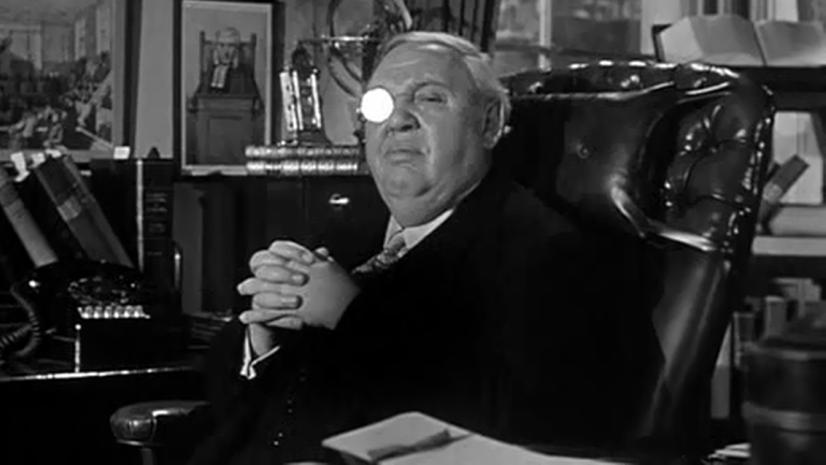
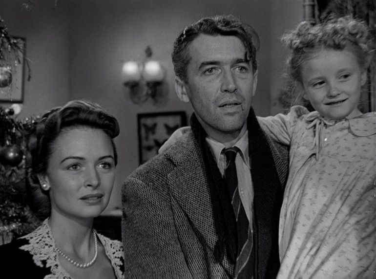
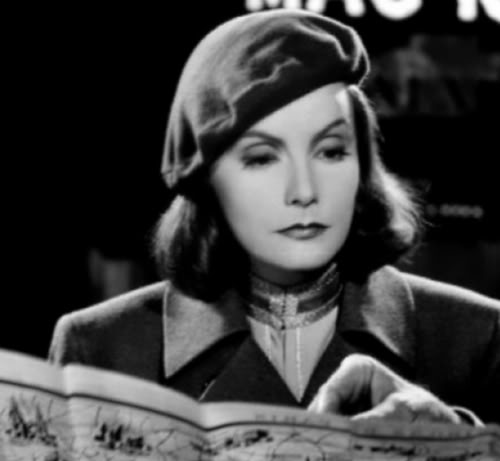
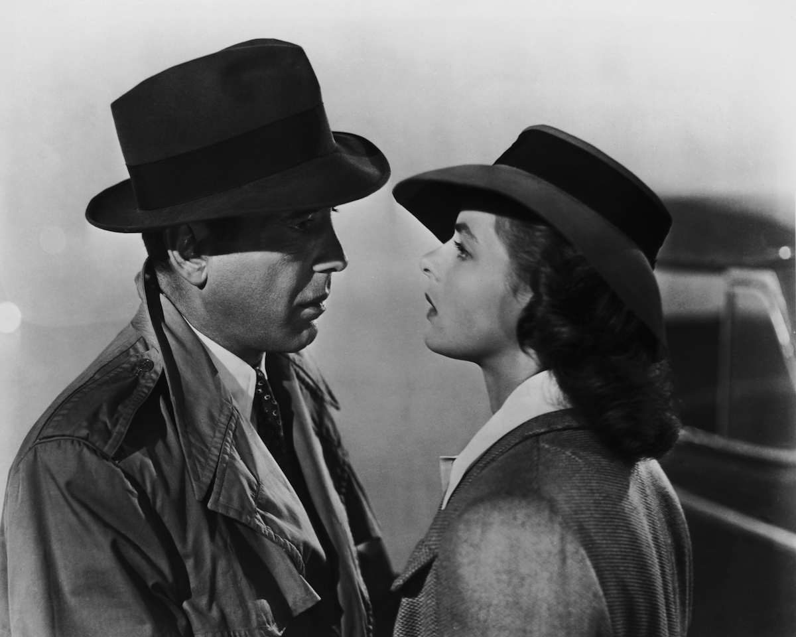
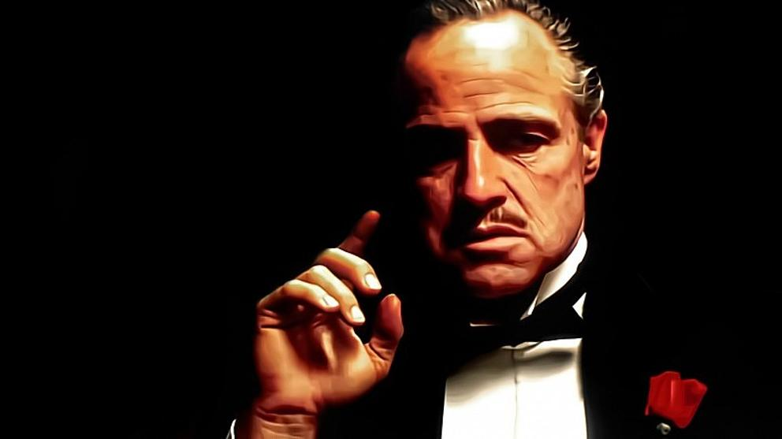

Actuaciones memorables
1 Abril de 2020
Si bien cada película es un mundo aparte, un universo imaginario, una creación paralela, cada escena, cada toma, cada plano, albergan una infinidad de anécdotas y curiosidades para contar, las cuales no pueden faltar, para que todo cinéfilo pueda contar, por esa razón, en este artículo me dispongo a contaros todas las anécdotas y curiosidades que conozco, de las obras maestras de este arte.
- Charles Laughton en "Testigo de Cargo" (1957) dir. Billy Wilder.

- James Stewart en "¡Qué bello es vivir! " (1946) dir. Frank Capra.

- Greta Garbo en "Ninotchka" (1939) dir. Ernst Lubitsch.

- Jack Lemmon en "El Apartamento" (1960) dir. Billy Wilder.

- Humphrey Bogart en "Casablanca" (1942) dir. Michael Curtiz.

- Steve McQueen en "La gran evasión" (1963) dir. John Sturges.

- Marlon Brando en "El padrino" (1972) dir. Francis Ford Coppola.

- Spencer Tracy en "Capitanes Intrépidos" (1937) dir. Victor Fleming.